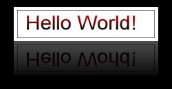

Basic usage
Imagick makes image manipulation in PHP extremely easy through an OO interface. Here is a quick example on how to make a thumbnail:
示例 #1 Creating a thumbnail in Imagick
<?php
header('Content-type: image/jpeg');
$image = new Imagick('image.jpg');
// If 0 is provided as a width or height parameter,
// aspect ratio is maintained
$image->thumbnailImage(100, 0);
echo $image;
?>
Using SPL and other OO features supported in Imagick, it can be simple to resize all files in a directory (useful for batch resizing large digital camera images to be web viewable). Here we use resize, as we might want to retain certain meta-data:
示例 #2 Make a thumbnail of all JPG files in a directory
<?php
$images = new Imagick(glob('images/*.JPG'));
foreach($images as $image) {
// Providing 0 forces thumbnailImage to maintain aspect ratio
$image->thumbnailImage(1024,0);
}
$images->writeImages();
?>
This is an example of creating a reflection of an image. The reflection is created by flipping the image and overlaying a gradient on it. Then both, the original image and the reflection is overlayed on a canvas.
示例 #3 Creating a reflection of an image
<?php
/* Read the image */
$im = new Imagick("test.png");
/* Thumbnail the image */
$im->thumbnailImage(200, null);
/* Create a border for the image */
$im->borderImage(new ImagickPixel("white"), 5, 5);
/* Clone the image and flip it */
$reflection = $im->clone();
$reflection->flipImage();
/* Create gradient. It will be overlayed on the reflection */
$gradient = new Imagick();
/* Gradient needs to be large enough for the image and the borders */
$gradient->newPseudoImage($reflection->getImageWidth() + 10, $reflection->getImageHeight() + 10, "gradient:transparent-black");
/* Composite the gradient on the reflection */
$reflection->compositeImage($gradient, imagick::COMPOSITE_OVER, 0, 0);
/* Add some opacity. Requires ImageMagick 6.2.9 or later */
$reflection->setImageOpacity( 0.3 );
/* Create an empty canvas */
$canvas = new Imagick();
/* Canvas needs to be large enough to hold the both images */
$width = $im->getImageWidth() + 40;
$height = ($im->getImageHeight() * 2) + 30;
$canvas->newImage($width, $height, new ImagickPixel("black"));
$canvas->setImageFormat("png");
/* Composite the original image and the reflection on the canvas */
$canvas->compositeImage($im, imagick::COMPOSITE_OVER, 20, 10);
$canvas->compositeImage($reflection, imagick::COMPOSITE_OVER, 20, $im->getImageHeight() + 10);
/* Output the image*/
header("Content-Type: image/png");
echo $canvas;
?>
以上例程的输出类似于：

This example illustrates how to use fill patterns during drawing.
示例 #4 Filling text with gradient
<?php
/* Create a new imagick object */
$im = new Imagick();
/* Create new image. This will be used as fill pattern */
$im->newPseudoImage(50, 50, "gradient:red-black");
/* Create imagickdraw object */
$draw = new ImagickDraw();
/* Start a new pattern called "gradient" */
$draw->pushPattern('gradient', 0, 0, 50, 50);
/* Composite the gradient on the pattern */
$draw->composite(Imagick::COMPOSITE_OVER, 0, 0, 50, 50, $im);
/* Close the pattern */
$draw->popPattern();
/* Use the pattern called "gradient" as the fill */
$draw->setFillPatternURL('#gradient');
/* Set font size to 52 */
$draw->setFontSize(52);
/* Annotate some text */
$draw->annotation(20, 50, "Hello World!");
/* Create a new canvas object and a white image */
$canvas = new Imagick();
$canvas->newImage(350, 70, "white");
/* Draw the ImagickDraw on to the canvas */
$canvas->drawImage($draw);
/* 1px black border around the image */
$canvas->borderImage('black', 1, 1);
/* Set the format to PNG */
$canvas->setImageFormat('png');
/* Output the image */
header("Content-Type: image/png");
echo $canvas;
?>
以上例程的输出类似于：

Working with animated GIF images
示例 #5 Read in GIF image and resize all frames
<?php
/* Create a new imagick object and read in GIF */
$im = new Imagick("example.gif");
/* Resize all frames */
foreach ($im as $frame) {
/* 50x50 frames */
$frame->thumbnailImage(50, 50);
/* Set the virtual canvas to correct size */
$frame->setImagePage(50, 50, 0, 0);
}
/* Notice writeImages instead of writeImage */
$im->writeImages("example_small.gif", true);
?>
Working with ellipse primitive and custom fonts
示例 #6 Create a PHP logo
<?php
/* Set width and height in proportion of genuine PHP logo */
$width = 400;
$height = 210;
/* Create an Imagick object with transparent canvas */
$img = new Imagick();
$img->newImage($width, $height, new ImagickPixel('transparent'));
/* New ImagickDraw instance for ellipse draw */
$draw = new ImagickDraw();
/* Set purple fill color for ellipse */
$draw->setFillColor('#777bb4');
/* Set ellipse dimensions */
$draw->ellipse($width / 2, $height / 2, $width / 2, $height / 2, 0, 360);
/* Draw ellipse onto the canvas */
$img->drawImage($draw);
/* Reset fill color from purple to black for text (note: we are reusing ImagickDraw object) */
$draw->setFillColor('black');
/* Set stroke border to white color */
$draw->setStrokeColor('white');
/* Set stroke border thickness */
$draw->setStrokeWidth(2);
/* Set font kerning (negative value means that letters are closer to each other) */
$draw->setTextKerning(-8);
/* Set font and font size used in PHP logo */
$draw->setFont('Handel Gothic.ttf');
$draw->setFontSize(150);
/* Center text horizontally and vertically */
$draw->setGravity(Imagick::GRAVITY_CENTER);
/* Add center "php" with Y offset of -10 to canvas (inside ellipse) */
$img->annotateImage($draw, 0, -10, 0, 'php');
$img->setImageFormat('png');
/* Set appropriate header for PNG and output the image */
header('Content-Type: image/png');
echo $img;
?>
以上例程的输出类似于：